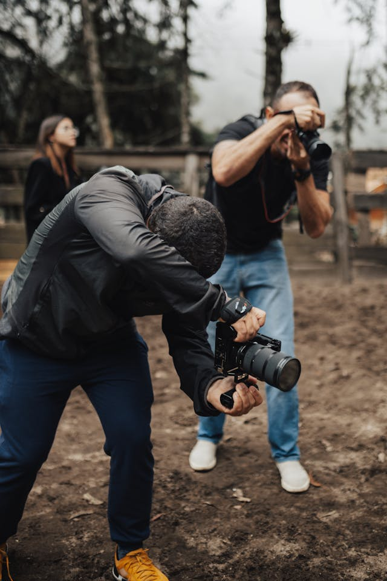

Sobre o Curso de Fotografia Profissional
Aprenda fotografia do zero ao avançado com um método prático e direto ao ponto. Desenvolva habilidades essenciais para capturar imagens incríveis e se destacar no mercado.
Domine sua câmera, entenda iluminação, composição e edição para criar fotos profissionais para redes sociais, eventos ou trabalhos comerciais
- Fundamentos da fotografia
- Controle total da câmera
- Técnicas de Iluminação
- Fotografia para redes sociais
- Edição de Imagens